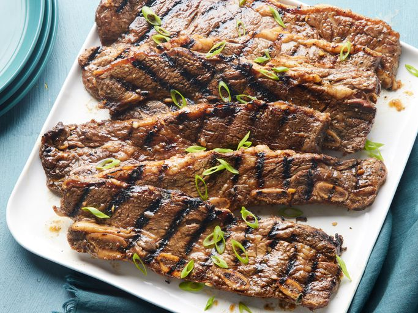
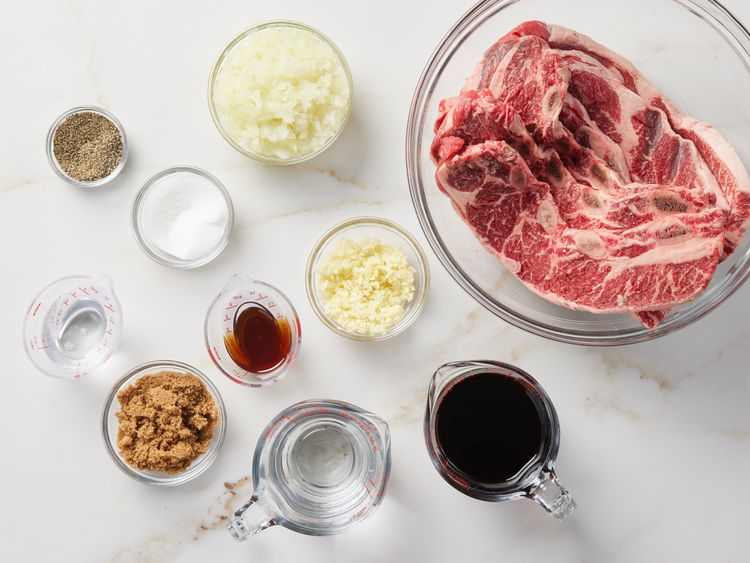
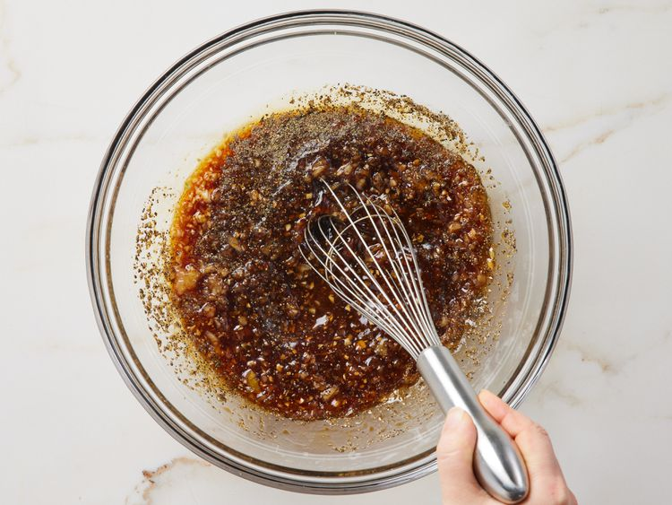
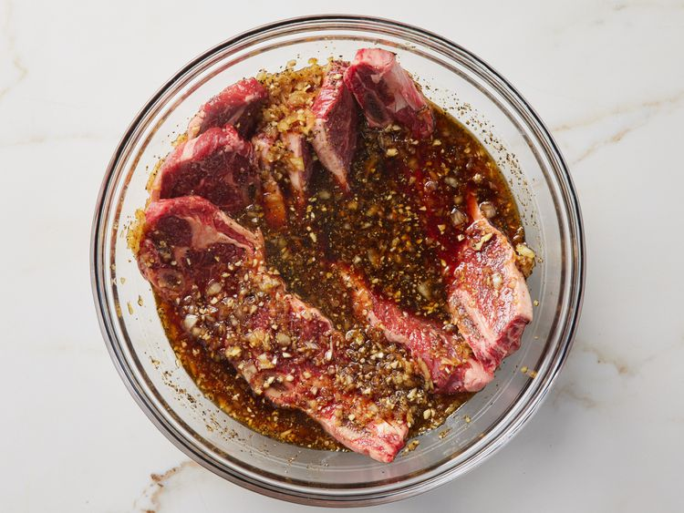
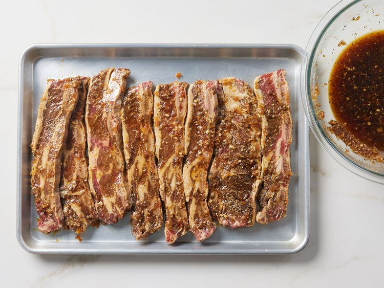
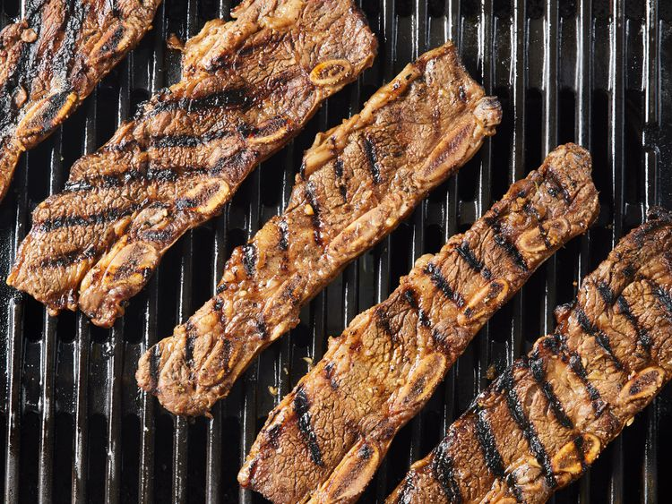

Back to All Odin Recipes Page
Korean BBQ Short Ribs (Galbi)

Credit: Dotdash Meredith Food Studios
Korean BBQ Short Ribs (Galbi)
A popular method in Korean cuisine of grilling meat, typically beef, pork or chicken.
Such dishes are often prepared on gas or charcoal grills built into the dining table itself,
though some restaurants provide customers with portable stoves for diners to use at their tables.
Alternatively, a chef uses a centrally displayed grill to prepare dishes that are made to order.
Ingredients List
- ¾ cup soy sauce
- ¾ cup water
- 3 tablespoons white vinegar
- 2 tablespoons sesame oil
- ½ large onion, minced
- ¼ cup minced garlic
- ¼ cup dark brown sugar
- 2 tablespoons white sugar
- 1 tablespoon black pepper
- 3 pounds Korean-style short ribs (beef chuck flanken, cut 1/3- to 1/2-inch-thick across bones)
Directions
- Gather all ingredients.

- Pour soy sauce, water, vinegar, and sesame oil into a large, non-metallic bowl. Whisk in onion, garlic, brown sugar,
white sugar, and pepper until sugars dissolve.

- Submerge ribs in marinade; cover the bowl and refrigerate 7 to 12 hours -the longer, the better.

- Preheat an outdoor grill for medium-high heat. Remove ribs from marinade and shake off excess; discard marinade.

- Cook on the preheated grill until the meat is no longer pink, 5 to 7 minutes per side.

- Serve and enjoy!